听雨 发自 凹非寺
量子位 | 公众号 QbitAI
起猛了，现在龙虾也能做视频了？？？
刚刚，X上有网友分享了一个用于视频制作的“Open Claw”，名叫AIVideo Agent，打开了龙虾的新玩法。
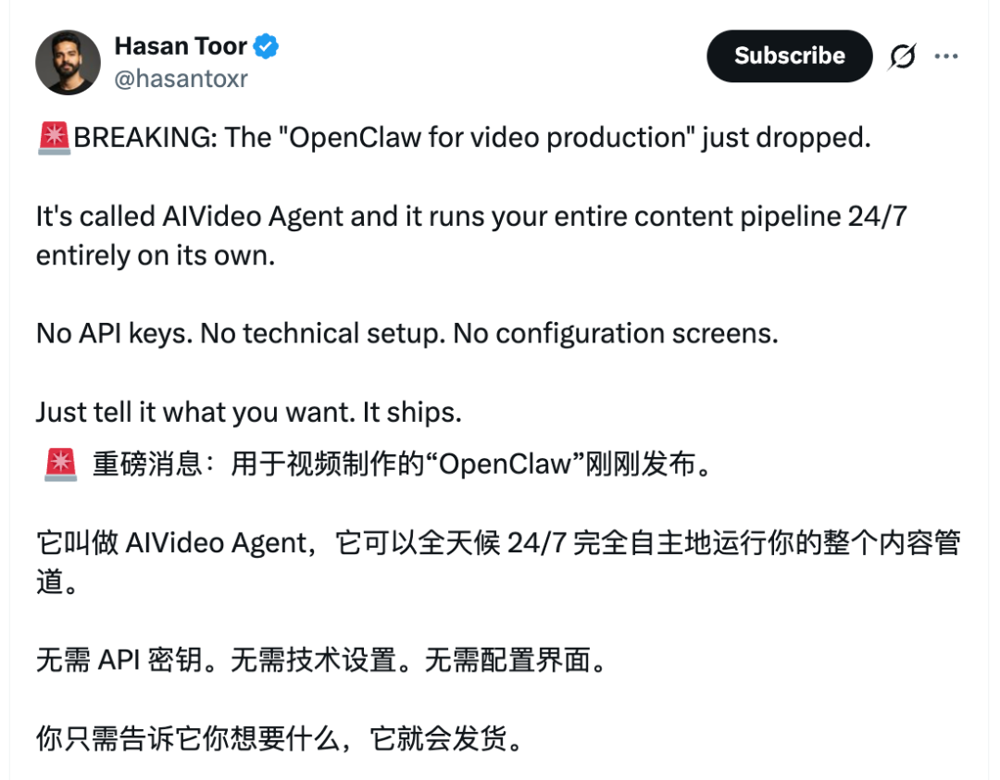
它可以全天候7×24小时不休息，完全自主地完成视频制作流程。并且上手毫无技术难度：无需API密钥，无需技术设置，无需配置界面。
只需要输入自然语言，它就可以满足你的需求。
看官方的宣传视频，效果也是相当炫酷：当你美美睡觉的时候，龙虾可以帮你打工剪视频，然后自动把成片发布到邮箱、Youtube、Instagram、X等平台。
加音乐、加转场、做特效、发邮件，样样都在行。
所以视频创作者也是要美美吃上这口龙虾肉了吗？
龙虾也能帮你做视频了
用龙虾来自动化视频制作，怎么实现的？
简单来说，就是AI视频创作平台AIVideo.com发布了一个Assistant功能，可以当你的“数字员工”，自动帮你完成视频剪辑任务。
同时，它还与Google云端硬盘、文档、Notion、Discord、Gmail、网络搜索等功能深度集成。
也就是说，剪完视频后怎么发也不需要你操心了，它会自动发邮件提醒你视频已制作完成，或帮你发布到各种社媒平台。
可能之前你剪视频的工作流是：找选题→写脚本→找素材→剪辑→配音→ 字幕→ 发布。
那么现在，这款龙虾可以统统帮你搞定，还可以在你睡觉的时候帮你干活。
由于打通了和其他应用的连接，所以你也可以让它：早上9点自动检查Notion任务→确定优先级项目→自动生成项目初稿→立即将编辑链接上传至Discord。
总之就是一整个实现内容生产流程的完全自动化。
而且官方还强调：我们与别的龙虾不同，我们不是通用型的，我们只做视频。
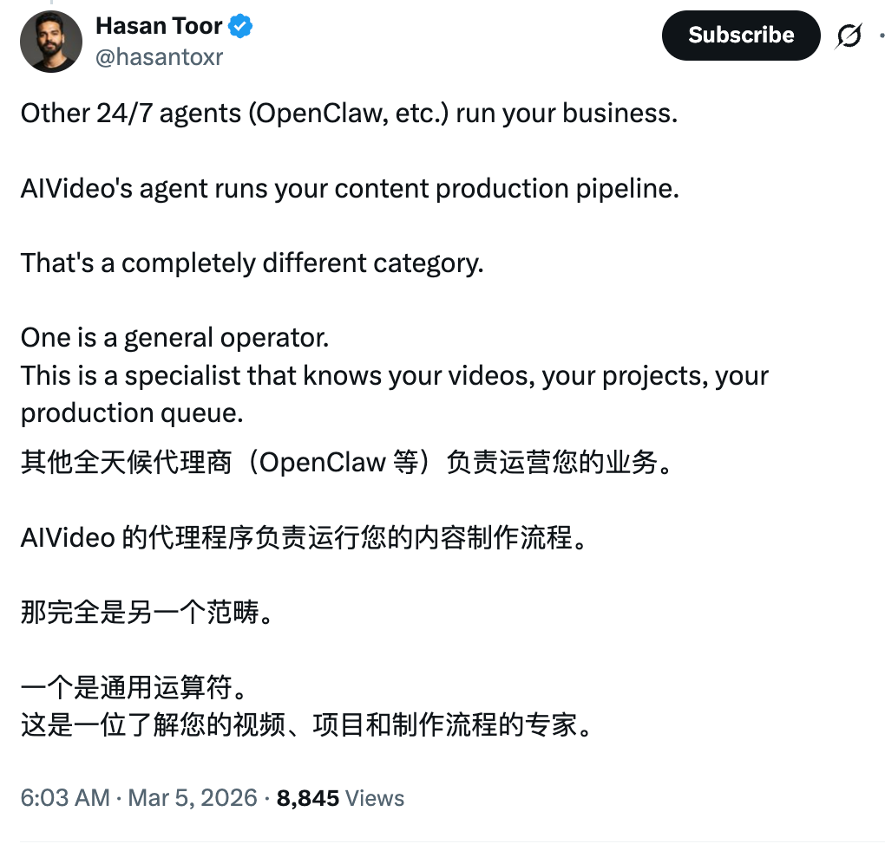
听起来，它会更了解视频制作流程，可以分清分镜、空镜、粗剪、精剪、B Copy等专业词汇的区别。
重要的是上手很简单。一般来说接入Agent工具你可能需要：配置API key →OAuth登录 →接Notion、Google Drive→写workflow→调工具，但这款龙虾只需要用自然语言描述需求即可。
无需API密钥，无需技术设置，无需配置界面——这对非技术人士来说太友好了。
那么，你肯定会好奇，要花多少钱？
官方网站显示，目前该功能还在测试中，需要开会员才能用，每月74刀，使用量是约1100个视频片段和22000张图片。
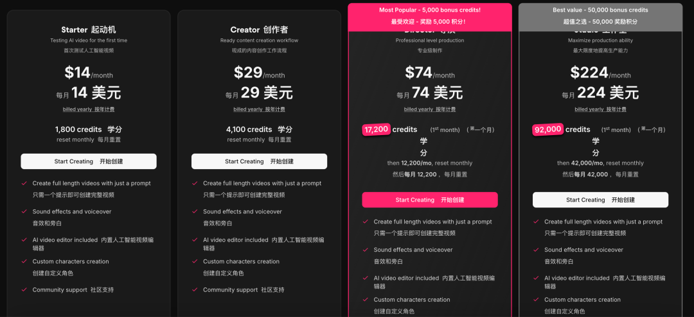
听起来不便宜，不过或许会有专业的油管博主或自媒体人士愿意试试呢？
X上已经有网友放出了自己用类似的工具来自动化视频制作的案例。
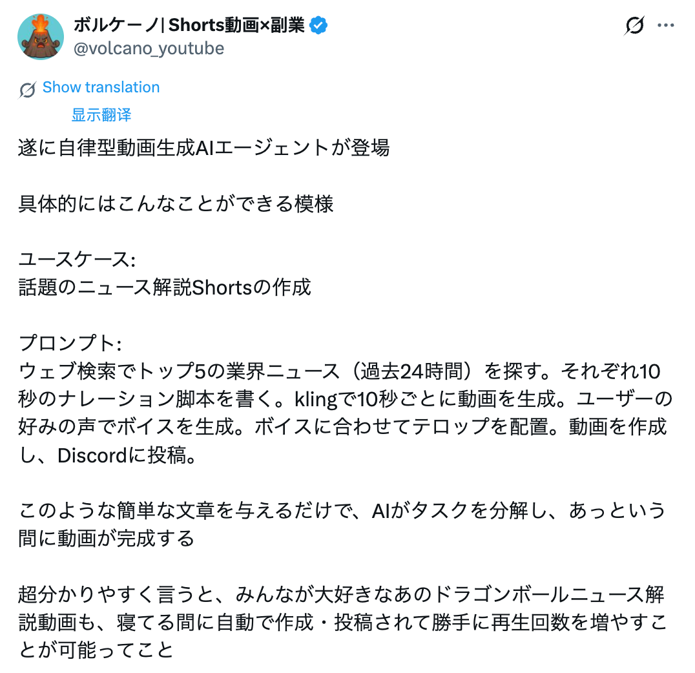
流程是这样的：
搜索网络，找出过去24小时内行业新闻排名前5的新闻；
为每条新闻撰写一段10秒的旁白脚本；
使用Kling每隔10秒生成一个视频。使用用户偏好的声音生成旁白；
添加字幕以配合旁白；
创建视频并将其发布到Discord。
然后他就美美得到了一个《龙珠》的新闻评论视频，发布在他的账号上。并且这个过程是在他睡觉的时候完成的。
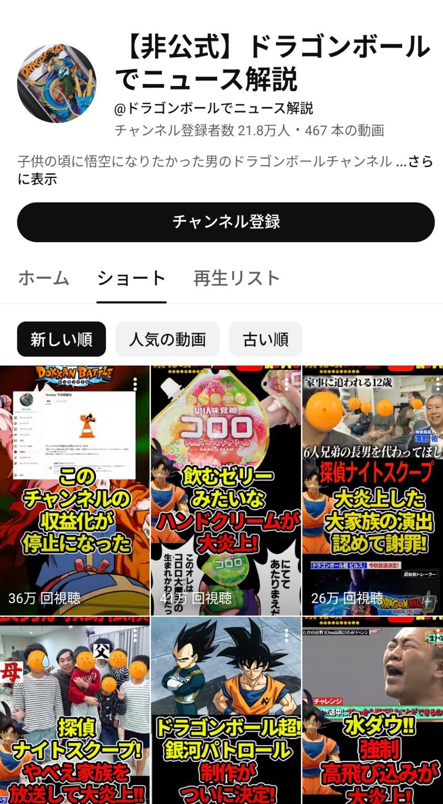
妈呀，以后睡觉也有龙虾帮你做自媒体了！
一手实测AIVideo
说回今天的主题AIVideo，我心血来潮扒了扒这个网站。
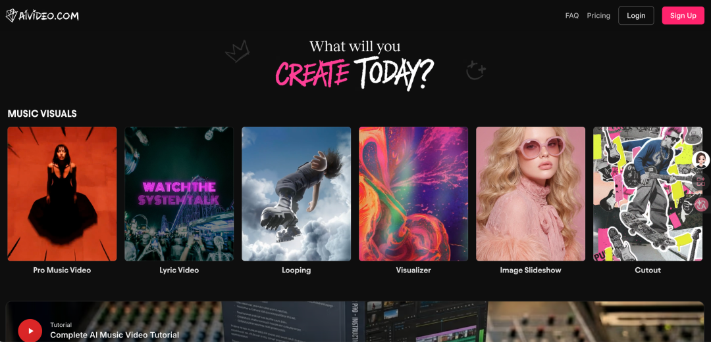
它的功能还挺齐全：可以做专业音乐MV、歌词视频、循环、可视化、PPT、剪贴风等等，支持从脚本开始创建视频，还有图片转视频、音频转视频、文字转图像、文字转视频等功能。
而且针对电商和房地产行业，它还推出了专门的视频创作模版，看起来是一应俱全。
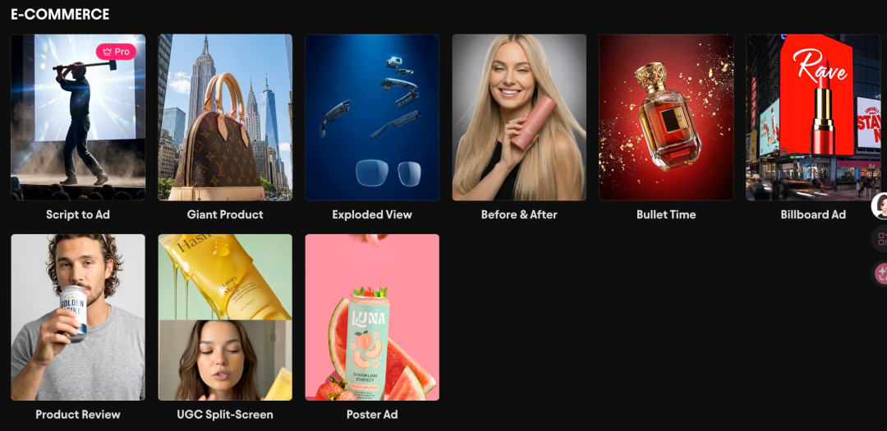
咱就做一个音乐MV试试，主角嘛，就用马斯克吧。
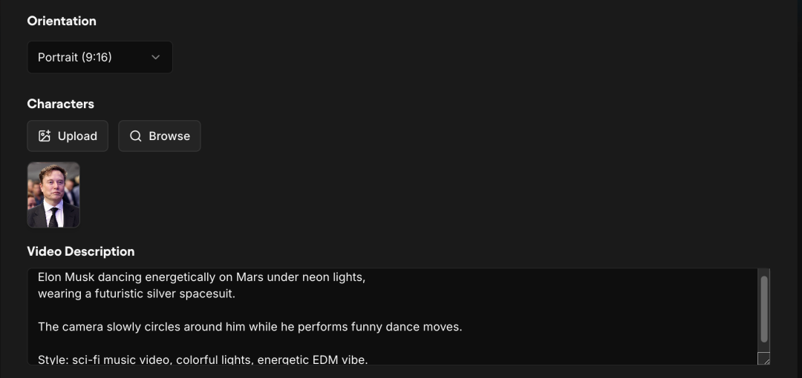
上传人物图片并输入提示词后，它会进入一个视频剪辑界面，跟我们平时常用的剪辑软件非常像。左侧是素材库，中间是视频轨道，右侧会显示AI的思考流程以及工具调用过程，也可以输入提示词进行交互。
视频生成速度非常快，大概就一两分钟，来看看最终成品：
我前面的提示词要求“马斯克在火星上跳舞，风格要电子舞曲感”。
它先生成了三个分镜，随后按照伴奏的节拍把它们剪辑到了时间轴上，并生成了主角舞动起来的效果。
整体效果还比较符合要求，不过人物一致性有待进步，第一和第三段的主角不太像马斯克的脸。
比较让我惊喜的是，右侧完全列出了AI的思考过程，比如它如何进行节拍分析并进行卡点。
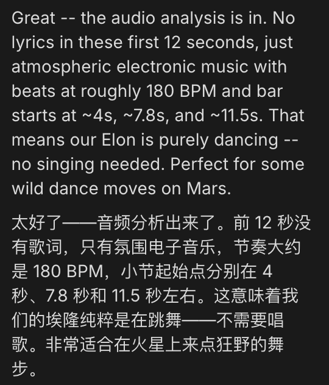
中间的一张图没有动，原因是我的免费积分不够了，它提示我进行充值，并详细列出了接下来的剪辑和特效思路。
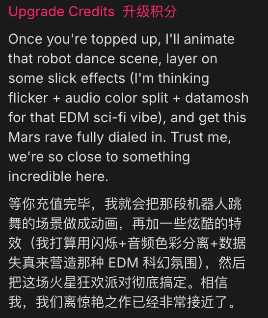
这波属实是有点惊艳到我的，而且它使用的是最常见的剪辑界面，所以有任何不满意的地方，你也可以直接在里面上手修改，分割、吸附、打点标记啥的都可以，我试了一下快捷键也差不多。
相比常见的视频生成模型直接给你输出结果，要修改只能继续抽卡，这样的操作空间就非常大了。
所以这么强大的视频生成功能，再加上龙虾的加持……以后做自媒体剪短视频岂不是美滋滋？
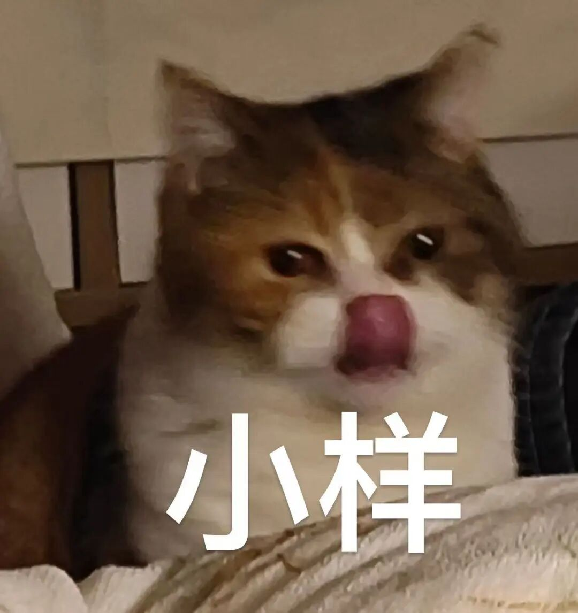
OMT
这个视频版的“Open Claw”一曝光，不少网友惊呼“视频创作真的要变天了”。
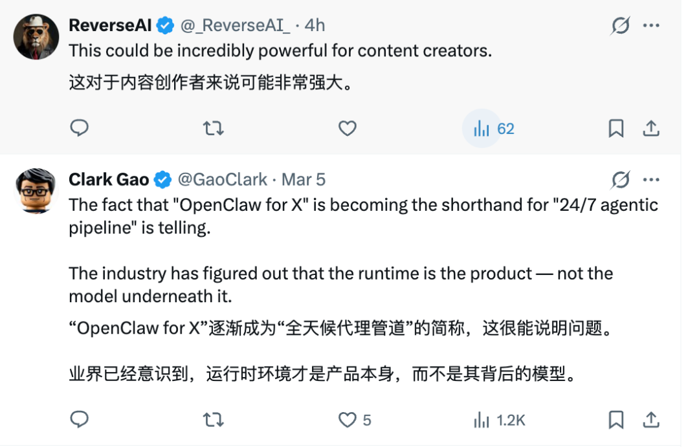
如果OpenClaw真的能把视频制作流程全部自动化，在你睡觉的时候也能自动帮你找选题、剪视频、做特效、加配乐、做字幕，甚至帮你发布，那会完全改写传统的视频生产流程。
现在做视频正走在和写代码类似的路径上：创作者越来越像导演，而执行者变成了一群不知疲倦的AI智能体。
剪辑师会消失吗？Youtuber会消失吗？没人知道答案。
龙虾已经改变了很多领域，我们更好奇：下一个OpenClaw for X在哪里？
（网站地址已经附在下方，欢迎大家上手玩玩，记得回来留言哦~）
网站地址：
https://www.aivideo.com/home
一键三连「点赞」「转发」「小心心」
欢迎在评论区留下你的想法！
— 完 —
🦞 今天，你养虾了吗？
欢迎加入【龙虾养成讨论组】，一起交流养虾经验！扫码添加小助手加入社群，记得备注【OPENCLAW】哦～